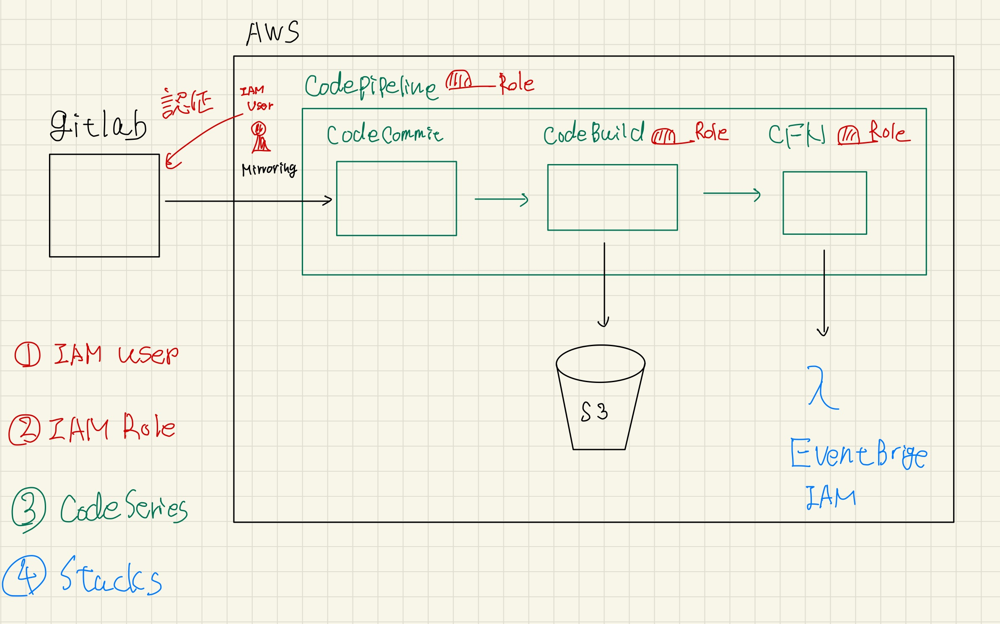
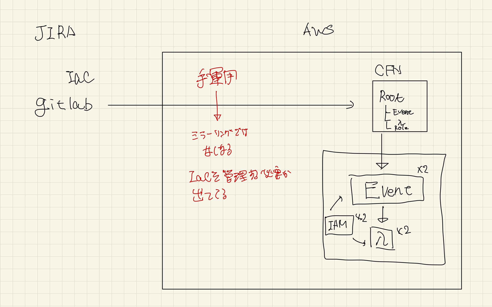
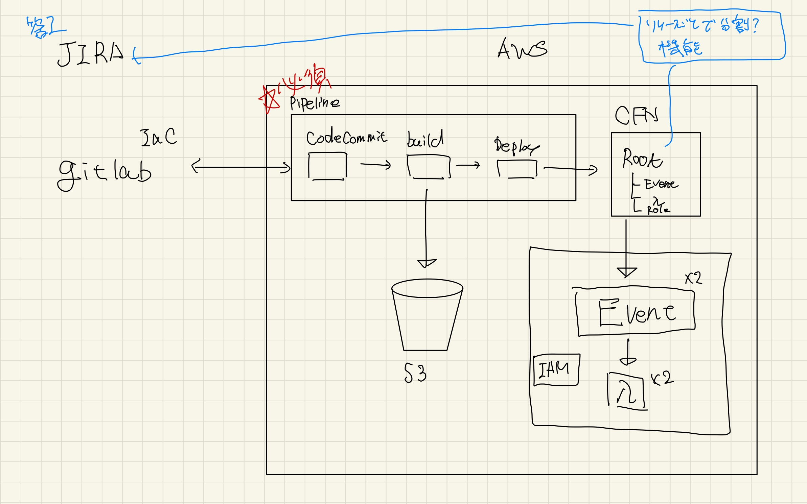
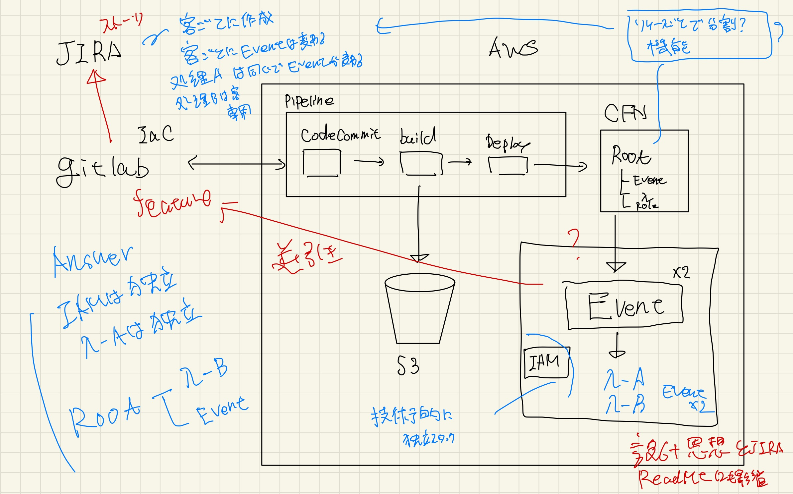
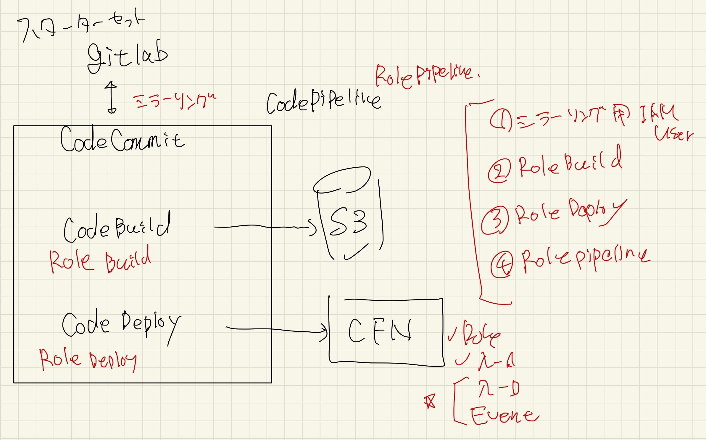

ストーリー¶
Chap1: DevOpsとIaC
DevOpsの思想
DevOpsの価値
DevOpsに必要なもの
IaCの価値
DevOpsにおけるIaC・GitOpsの価値・役割
AWSにおけるIaC（CFN/SAM/CDK）
IaCとCICD・GitOpsについて
Chap2: チームでIaCを利用・運用するためのノウハウ
コードの品質担保について：横展開につながる
複数人で作業している時のTips
テスト
開発フローについて
JIRAとgitlab共通的な必要最低限のベストプラクティス利用方法
JIRAとgitlabの比較
全体像
デモ
ストーリー詳細¶
Chap1: DevOpsとIaC
DevOpsの思想
DevOpsの価値
DevOpsに必要なもの
共通の価値観(DevOpsに対する理解・ビジネス理解インセプションデッキ)
見える化・属人性排除：Wiki/JIRA/Git（バージョン管理）
IaCの価値
DevOpsにおけるIaC・GitOpsの価値・役割
見える化に寄与できる
AWSにおけるIaC（CFN/SAM/CDK）
IaCとCICD・GitOpsについて
IaC単独：リソースの設定などを可視化できる
CICD：属人性を排除することができる
GitOps：環境への反映を可視化できる
Chap2: チームでIaCを利用・運用するためのノウハウ
コードの品質担保について：横展開につながる
複数人で作業している時のTips
命名規則
Readme
InputとOutputの明記
テンプレートの作成
MR
Issue
テンプレートファイル（リソース単位か機能単位か）
ソースコードのRV体制
テスト
開発フローについて
JIRAとgitlab共通的な必要最低限のベストプラクティス利用方法
JIRAとgitlabの比較
情報と知見の共有
チケット管理
ブランチ管理
PJ管理
比較
gitlab
Epic/Issue/Branchを一気通貫でみれる
Issue間の紐付けが苦手
MileStoneなどで進捗管理が可能
テンプレート化
jiraではEpic/Issue
Branchへの紐付けができない
Issue間の紐付けなどは得意
Agileの思想を強く受けているので可視化パターンが多い
gitlabとjiraの組み合わせ
Chap3: 上記を踏まえてのIaCスターターセット
全体像
Gitなし・CICDなし
GitとCICD導入でGitOps(IaCの価値)
JIRAとGitlabの連携(開発フロー)
デモ
管理単位の課題
JIRAから確認
gitOpsによる自動デプロイ
ポイント¶
JIRAとGitlabの利用方法について
両者の対応比較表作成
何が可視化できる？（コミットの数やチケットの消化率）
何が得意（ブランチとチケットの連携か、スケジュール管理か）
両者を組み合わせた方が良い場合や、gitlabやjiraがいい場合など
管理者は何が可視化できるかなどに強い興味を持っていたりする
中間報告のコメント
全く導入されれていない時にどこから始めればいいのか
始め方などを教えてほしい
スターターイメージ¶

でもストーリー¶
   